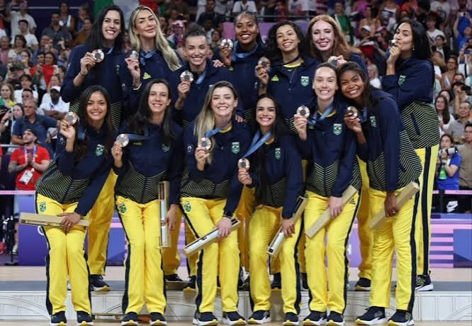
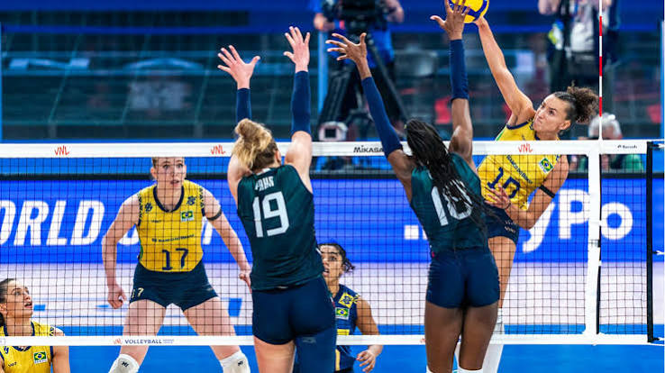
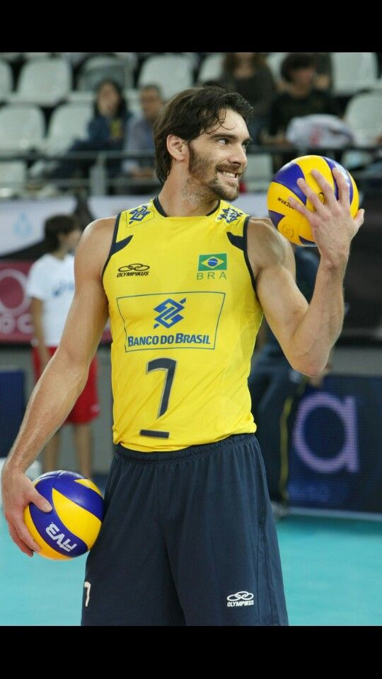
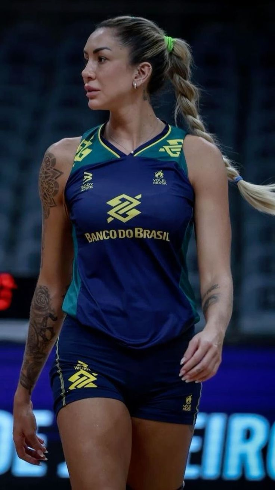
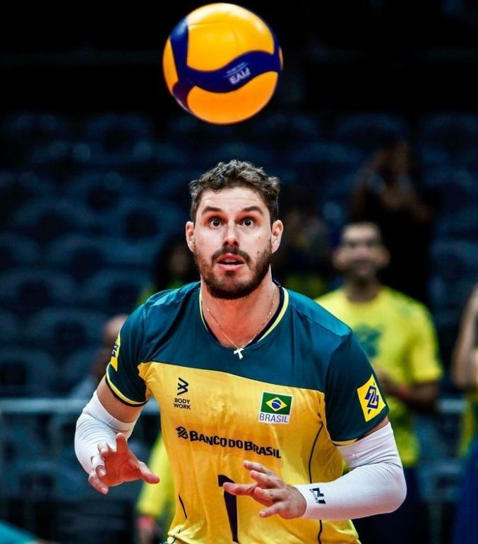

Olimpíadas
O torneio olímpico é um dos maiores palcos do vôlei. Seleções de diferentes países entram em quadra buscando uma medalha e a chance de representar seu país.

Velocidade, parceria e muita emoção em cada ponto disputado dentro da quadra.
O vôlei é um esporte coletivo em que duas equipes ficam em lados diferentes da quadra, separadas por uma rede. O objetivo é fazer a bola cair no lado adversário ou aproveitar um erro do outro time.
Cada ponto depende bastante da comunicação e do trabalho em equipe. Um bom passe, um levantamento preciso e um ataque bem feito podem mudar toda a partida.

O vôlei foi criado em 1895 pelo professor William G. Morgan, nos Estados Unidos. A ideia era criar uma atividade que pudesse ser praticada de forma diferente do basquete.
No começo, o esporte era conhecido como "mintonette". Com o passar do tempo, novas regras foram surgindo e o jogo foi ficando cada vez mais parecido com o vôlei que conhecemos hoje.
A modalidade se espalhou por vários países e ganhou cada vez mais espaço nas competições esportivas. Hoje, é um dos esportes coletivos mais praticados no mundo.
Além das quadras, o esporte também ganhou uma versão muito popular nas praias: o vôlei de praia, que possui suas próprias características e regras.
Fazer a bola cair no lado adversário ou conseguir o ponto quando o outro time comete um erro.
No vôlei tradicional de quadra, cada equipe joga com seis atletas ao mesmo tempo.
A equipe precisa organizar a jogada usando os toques permitidos antes de mandar a bola para o outro lado da rede.
O ponto acontece quando a bola toca o chão adversário ou quando o outro time comete uma falta ou erro.
O vôlei possui várias competições importantes, reunindo grandes seleções e equipes em partidas que costumam render muita emoção.

O torneio olímpico é um dos maiores palcos do vôlei. Seleções de diferentes países entram em quadra buscando uma medalha e a chance de representar seu país.

A Liga das Nações reúne algumas das principais seleções do mundo em uma competição cheia de partidas durante a temporada.
A Superliga reúne grandes clubes brasileiros e é um dos principais campeonatos de vôlei do país, tanto no masculino quanto no feminino.
O Brasil já teve muitos atletas que deixaram sua marca no vôlei e ajudaram a tornar o país uma referência mundial na modalidade.

Giba foi um dos grandes nomes do vôlei brasileiro. Conhecido pela energia em quadra, pelos ataques e pela capacidade de decidir partidas importantes.

Thaisa se destacou principalmente no bloqueio e no ataque. Com a seleção brasileira, conquistou títulos importantes e se tornou uma referência do vôlei feminino.

Bruninho é conhecido pela qualidade nos levantamentos, pela leitura do jogo e pela liderança dentro da quadra. É considerado um dos grandes levantadores do vôlei brasileiro.
Alguns dos atletas que se tornaram referências e ajudaram a marcar a história do vôlei.
Depois de conhecer um pouco mais sobre o esporte, que tal assistir a algumas jogadas e sentir um pouco da velocidade e da emoção de uma partida?
Comecei a ter contato com o vôlei através das atividades esportivas e, aos poucos, fui criando mais interesse pela modalidade.
Gosto principalmente da dinâmica do esporte. Dentro da quadra, cada jogador tem sua função e uma boa comunicação entre todos pode fazer muita diferença durante uma partida.
Ainda tenho bastante coisa para aprender, mas quero continuar praticando e melhorando minhas habilidades. As aulas com o professor Jadson também têm sido uma oportunidade para evoluir e conhecer melhor o esporte.

Quando foi criado, o vôlei tinha outro nome: "mintonette".
O vôlei possui duas modalidades muito conhecidas: o vôlei de quadra e o vôlei de praia.
Uma boa jogada de vôlei depende bastante da comunicação e da sintonia entre os jogadores.